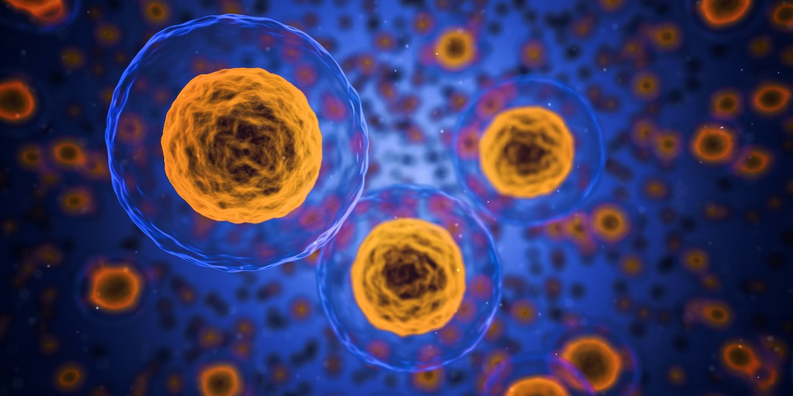
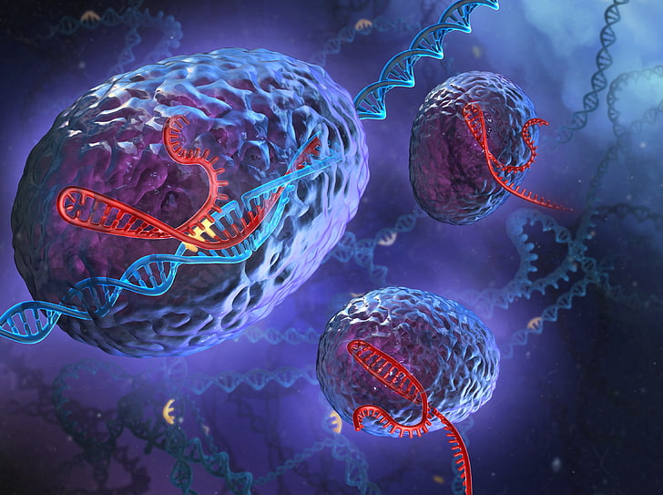

Detecting kidney issues early is critical for successful treatment and management.

Cancer
disease
Cancer detection refers to the process of identifying the presence of cancerous cells or tumors
in the body. Early detection of cancer is crucial for successful treatment and improved
outcomes.

Liver
disease
Liver detection refers to the process of identifying abnormalities or diseases affecting the
liver. It involves various methods such as imaging tests (ultrasound, CT scans), blood tests to
measure liver enzymes, and biopsies for confirmation.